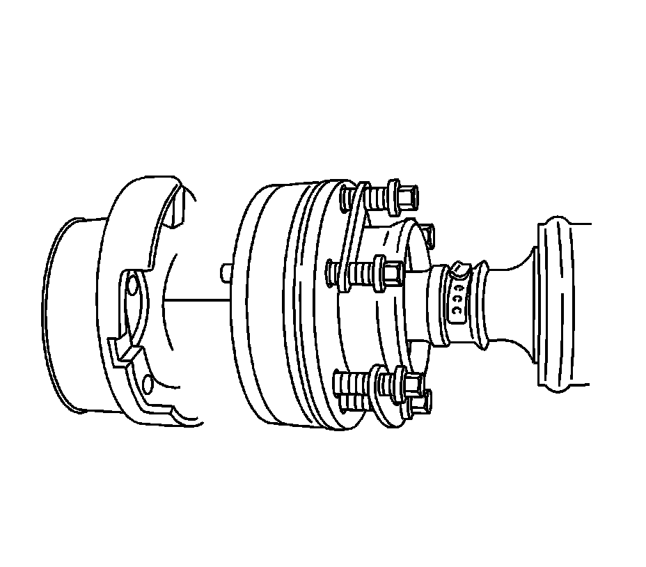
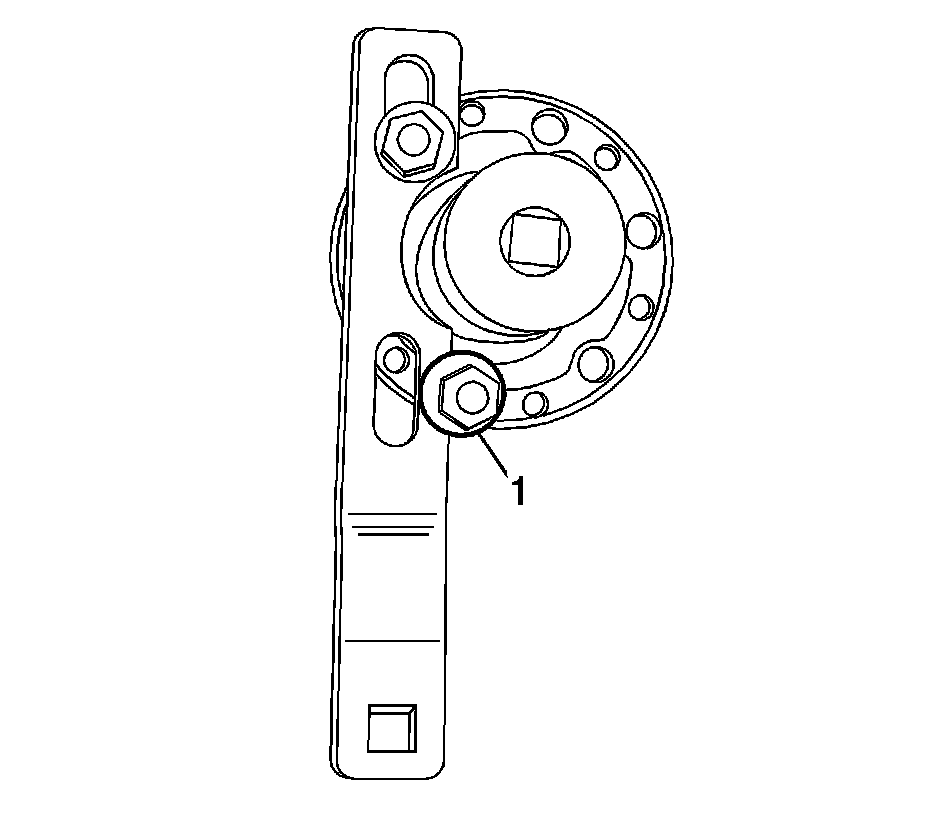
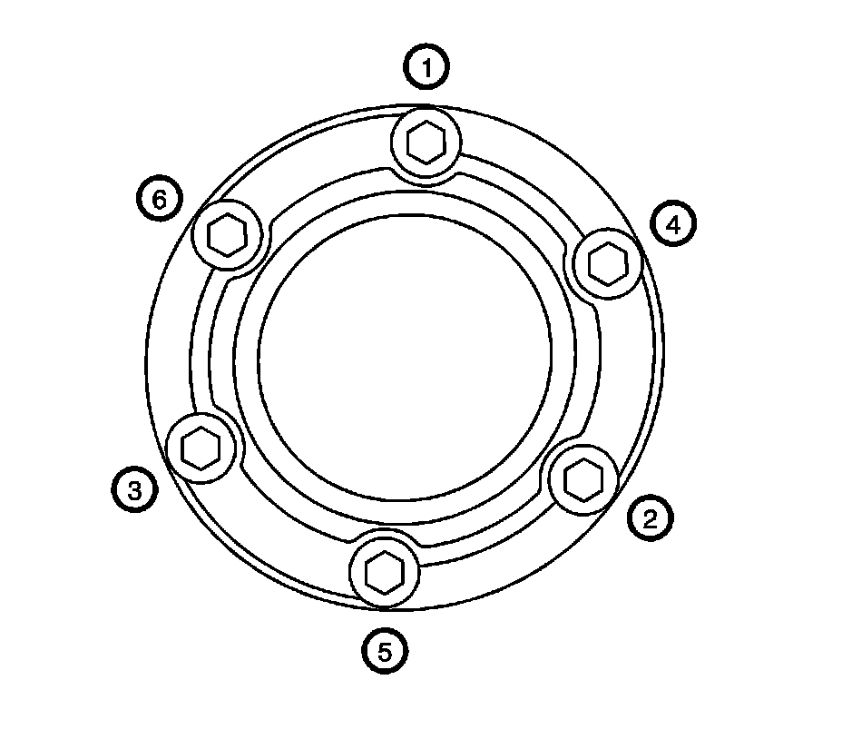

Drive Pinion Flange/Yoke and/or Oil Seal Replacement (V8 Engine)
Drive Pinion Flange/Yoke and/or Oil Seal Replacement (V8 Engine)
Tools Required
* J 45005 Seal Installer
* J 45012 Holding Fixture
* J 45019 Flange and Pinion Cage Remover
* J 34826 Hub Nut Socket (36 mm)
Removal Procedure

1. Raise and support the vehicle. Refer to Lifting and Jacking the Vehicle (Service and Repair) .
2. Remove the exhaust system. Refer to Exhaust System Replacement (Service and Repair) .
3. Reference mark the propeller shaft constant velocity (CV) joint to the drive pinion flange.
Notice: The propeller shaft must be supported during removal and/or installation so that the CV joint does not articulate more than 8 degrees. Allowing the propeller shaft to articulate greater than 8 degrees could cause damage to the CV boot. Damage to boot could lead to contamination or loss of lubrication which could lead to CV joint damage.
4. Remove the propeller shaft CV joint-to-drive pinion flange bolts.
5. Push the propeller shaft toward the front of the vehicle to release the propeller shaft from the drive pinion flange.
6. Position the propeller shaft aside and support with heavy mechanics wire or equivalent.

7. Install the J 45012 to the drive pinion flange.
Position the lower bolt (1) behind and outside of the J 45012 .
8. While holding the J 45012 , remove the drive pinion nut using the J 34826 .
9. Remove J 45012 from the drive pinion flange.

10. Install the J 45019 to the drive pinion flange.
11. Using the J 45019 , remove the drive pinion flange.
12. Remove the J 45019 from the drive pinion flange.
13. Using a flat-bladed tool, remove the drive pinion seal.
Do not damage the sealing surfaces of the pinion shaft or differential pinion housing.
Installation Procedure
Important: Ensure the pinion bore is free of excess gear oil. Excessive fluid can get trapped behind the new seal's dust shield. The trapped gear oil can get squeezed out when installing the pinion flange and give the illusion of a continued leak.
1. Lubricate the drive pinion flange sealing surface of the drive pinion seal with synthetic gear oil GM P/N 12378514 (Canadian P/N 88901045) or equivalent.

2. Using the J 45005 , install the drive pinion seal to the differential.
3. Position the drive pinion flange to the pinion shaft.
Important: The pinion shaft threads and the drive pinion flange nut must be free of residue and debris prior to application of threadlocker in order to ensure proper adhesion and fastener retention.
4. Prepare the pinion shaft threads and the drive pinion flange nut for assembly:
1. Thoroughly clean the residue from the pinion shaft threads using denatured alcohol or equivalent and allow to dry.
2. Thoroughly clean the residue from the drive pinion flange nut using denatured alcohol or equivalent and allow to dry.
5. Apply threadlocker GM P/N 12345382 (Canadian P/N 10953489) or equivalent to 2/3 of the threaded length of the pinion shaft threads. Ensure that there are no gaps in the threadlocker along the length of the filled area of the pinion shaft threads.
6. Allow the threadlocker to cure approximately 10 minutes before installation.

7. Install the J 45012 to the drive pinion flange.
Position the lower bolt (1) ahead and outside of the J 45012 .
Notice: Refer to Fastener Notice (Fastener Notice) .
8. While holding the J 45012 , install the drive pinion nut using the J 34826 .
Tighten the nut to 285 N.m (210 lb ft).
9. Remove the J 45012 from the drive pinion flange.
10. Push the propeller shaft toward the front of the vehicle and position the propeller shaft CV joint to the drive pinion flange.
Align the reference mark on the propeller shaft CV joint and the drive pinion flange.
Important: The propeller shaft CV joint-to-drive pinion flange bolts and the drive pinion flange threaded holes must be free of residue and debris prior to application of threadlocker in order to ensure proper adhesion and fastener retention.
11. Prepare the propeller shaft CV joint-to-drive pinion flange bolts and the drive pinion flange threaded holes for assembly:
1. Thoroughly clean the residue from the threads of the CV joint-to-drive pinion flange bolts using denatured alcohol or equivalent and allow to dry.
2. Thoroughly clean the residue from the drive pinion flange threaded holes using denatured alcohol or equivalent and allow to dry.
12. Apply threadlocker GM P/N 12345493 (Canadian P/N 10953488) or equivalent to 2/3 of the threaded length of the CV joint-to-drive pinion flange bolt threads. Ensure that there are no gaps in the threadlocker along the length of the filled area of the bolt threads.

13. Install the propeller shaft CV joint-to-drive pinion flange bolts.
Tighten the bolts in sequence (1-6) to 60 N.m (44 lb ft).
14. Inspect the rear drive axle lubricant level. Refer to Rear Axle Lubricant Level Inspection (Rear Drive Axle) .
15. Install the exhaust system. Refer to Exhaust System Replacement (Service and Repair) .
16. Lower the vehicle.